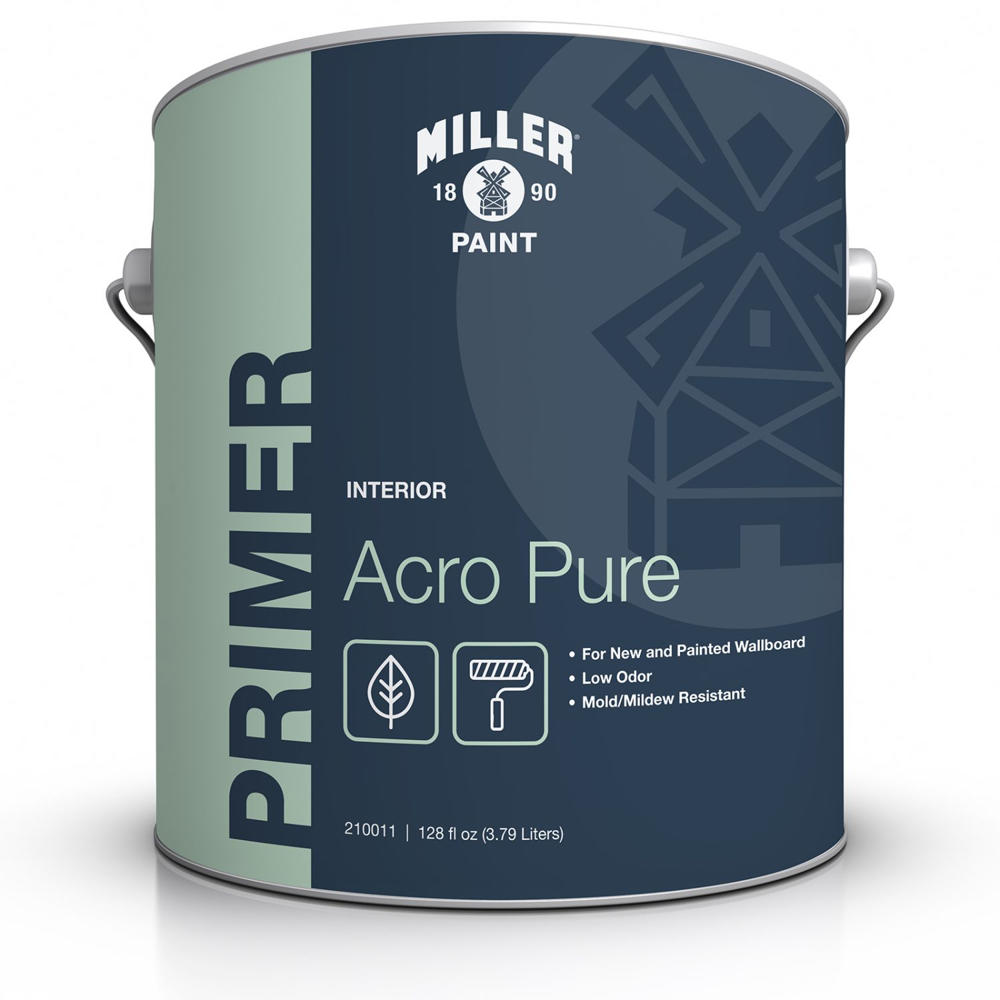

鼠标悬浮至产品图片查看包装细节
极致环保配方
金级认证
超低 VOC (< 2 g/L)
Acro Pure® 内墙底漆
Low Odor Interior Primer
Acro Pure 底漆专为追求极致环保的 Acro Pure 涂装系统而配制，是新建或翻新室内墙板的完美基底。
作为高品质纯丙烯酸（100% Acrylic）底漆，它不仅具有极低的气味，还能极其出色地封闭多孔基材，为面漆提供极佳的抓取力和均匀的附着表面。
搭配 Acro Pure 系列面漆使用，将为您呈现美观、耐用且持久的顶级内墙饰面。全系荣获 Indoor Advantage™ Gold 金级认证，最大程度守护室内呼吸安全。
表面光泽 (Sheen)
专业底漆： 极低反光的纯哑光表面 (0-5 @ 60°)。强效封闭基层、阻止基层物质渗出、提高面漆附着力，并确保面漆的光泽与色彩展现出最佳的一致性。

- ✓ 荣获 SCS 室内空气质量金级认证 (Indoor Advantage™ Gold)
- ✓ 专为 Acro Pure 极净系统打造的专属基底
- ✓ 气味极低，极致的超低 VOC 含量 (< 2 g/L)
- ✓ 为顶层面漆提供完美均匀的光泽保持力 (Sheen holdout)